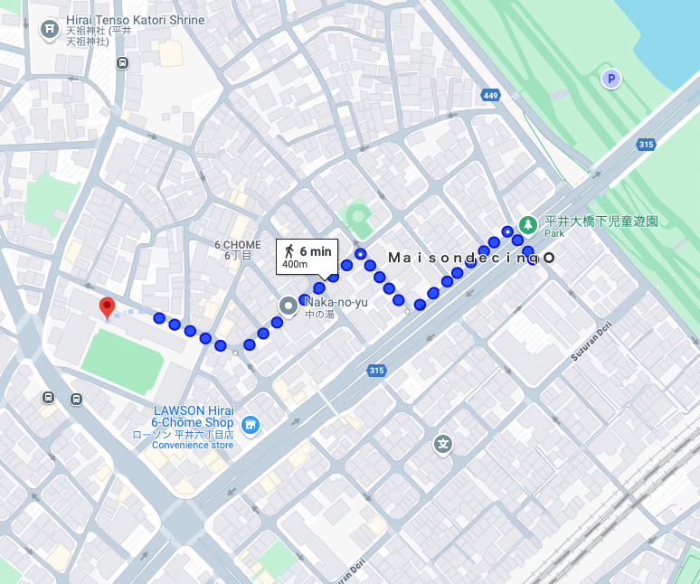

緊急時の連絡方法
EMERGENCY
緊急時の連絡先
If you have any problems, please contact us by message on the reservation site.
In case of emergency, please call bellow phone number.
050-5810-2161
Property address (please provide this over the phone)：
5-chōme-58-2 Hirai, Edogawa City, Tokyo 132-0035
お困りの際は、予約サイトのメッセージまでご連絡ください。
緊急時は以下の電話番号にお電話ください。
050-5810-2161
物件の住所（お電話口でお伝えください）：
〒132-0035 東京都江戸川区平井５丁目５８−２
EMERGENCY Call
事故や事件が発生した際のご連絡先
Police（警察） 110
Fire（消防署） 119
Rescue（救急車） 119
Multi Language Hospital Serch
https://www.jnto.go.jp/emergency/eng/mi_guide.html
EVACUATION SITE
避難場所
In case of any danger, please proceed to the designated evacuation site for safety.
Edogawa City Hirai Elementary School
6-chōme-35-1 Hirai, Edogawa City, Tokyo 132-0035
地震や台風などによって、水害や土砂災害などの災害が発生するおそれがあるときは指定された避難場所へ安全に避難して下さい。
江戸川区立平井小学校
〒132-0035 東京都江戸川区平井６丁目３５−１
